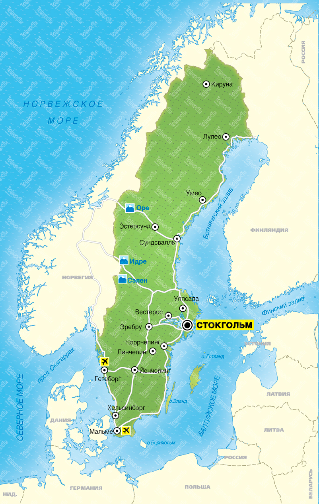

Швеция — страна, в которой органично переплетаются вековые традиции и ультрасовременные тенденции, предлагая путешественникам поистине уникальный опыт. От шумных мегаполисов с их футуристической архитектурой до первозданных просторов северной природы, Швеция манит своим разнообразием и непередаваемой атмосферой.
Столица, Стокгольм, раскинувшаяся на четырнадцати островах, является настоящей жемчужиной. Исследуйте мощеные улочки Гамластана, старого города, с его королевским дворцом и живописными площадями. Погрузитесь в мир искусства в музеях мирового класса:
Современный Стокгольм очарует вас минималистичным дизайном, модными бутиками и оживленной ресторанной сценой.
Но Швеция — это не только города. Выезжая за пределы столицы, вы откроете для себя страну озер, лесов и бескрайних побережий. Отправьтесь на север, в Лапландию, чтобы:
Прокатитесь на велосипеде по живописным сельским дорогам, окунитесь в прохладные воды кристально чистых озер или отправьтесь в поход по национальным паркам, где природа предстает во всей своей нетронутой красе.
Шведская кухня — еще одна причина посетить эту страну. Попробуйте знаменитые фрикадельки, сельдь в различных вариациях, а также разнообразную выпечку и десерты. Не забудьте о «фика» — традиционном шведском перерыве на кофе с выпечкой, который является неотъемлемой частью местной культуры.
«Шведское гостеприимство известно своей теплотой и радушием. Местные жители, хоть и могут показаться сдержанными на первый взгляд, всегда готовы помочь и поделиться информацией.»
Важно помнить и быть готовым к шведскому подходу к планированию. Здесь ценятся пунктуальность и четкость, поэтому при назначении встреч или планировании мероприятий, лучше быть вовремя.
В Швеции особое внимание уделяется устойчивому развитию и заботе об окружающей среде. Это отражается во всем – от систем сортировки мусора до развития экологически чистого транспорта. Многие гостиницы и туристические объекты имеют экологические сертификаты.
Для любителей активного отдыха Швеция предлагает безграничные возможности:
Нельзя не упомянуть и богатую историю Швеции, которая прослеживается в ее замках, крепостях и старинных городах. От средневековых руин до впечатляющих дворцов эпохи Возрождения, каждый уголок страны хранит свои тайны. Посещение музеев позволит глубже понять шведскую культуру и наследие, делая путешествие не только приятным, но и познавательным.